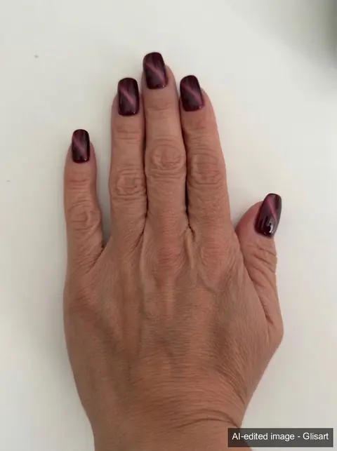

Look
Samt-Bordeaux
≈ #6A1B2E · bordeaux
- Look
- Uni
- Finish
- Magnetisches Cat-Eye
- Form
- Rund
- Länge
- Länge behalten
- Technik
- Klassischer Lack
Für die Nageldesignerin
· Nagel vorbereiten: Nagelhaut zurückschieben, nicht schneiden.
· Cat-Eye: Magnetlack, den Lichtstreifen mit dem Magneten formen.